Identity Domainでは、SAMLやOAuthなどの技術を使用することで、様々なアプリケーションとシングル・サインオンを実装することができます。 本チュートリアルでは、Oracle Application Express（APEX）で作成したアプリケーションとIdentity Domainの認証連携、およびIdentity Domainのグループに基づくアクセス制限（認可）の実装手順を紹介します。
本チュートリアルを完了すると、Identity DomainのユーザーはIdentity Domainのユーザー名とパスワードでAPEXアプリケーションにアクセスすることができるようになります。 また、Identity Domainのユーザーが属しているグループに基づいて、APEXアプリケーション内でアクセスできるページを制御することができるようになります。
所要時間 : 約1時間
前提条件 :
- OCIチュートリアルOracle Database編 - ADBの付属ツールで簡易アプリを作成しよう（APEX）を参考に、APEXのワークスペースを作成していること
- OCIチュートリアルOCI IAM Identity Domains テナント管理者・一般ユーザーを作成するを参考に、APEXアプリケーションにアクセスするユーザーが複数名分作成されていること。
注意 : ※チュートリアル内の画面ショットについてはOracle Cloud Infrastructureの現在のコンソール画面と異なっている場合があります。
1. APEXアプリケーションの作成（任意）
本手順では、APEXアプリケーション内のアクセス制限を実装するため、APEXのサンプルアプリケーションをインストールします。 既存のアプリケーションがある場合は、本手順は実施しなくても問題ありません。
任意のAPEXワークスペースにログインします。
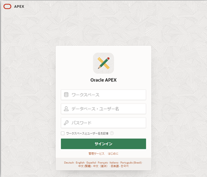
ワークスペースにログインしたら、「アプリケーション・ビルダー」を選択します。
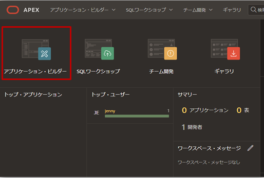
「作成」ボタンをクリックします。
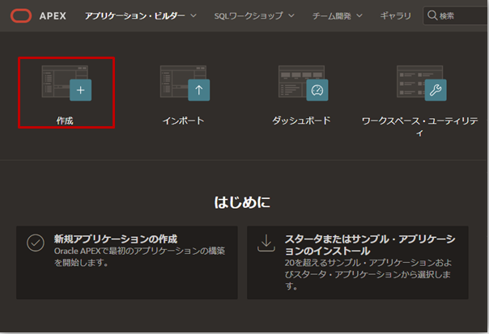
「ファイルから」を選択します。
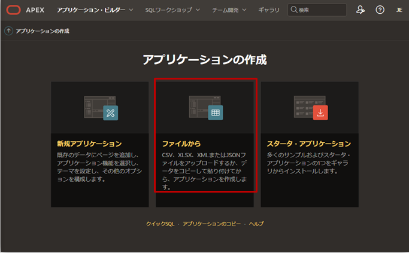
「コピー・アンド・ペースト」のタブを開き、「販売」のサンプル・データ・セットを選択し、「次」ボタンをクリックします。
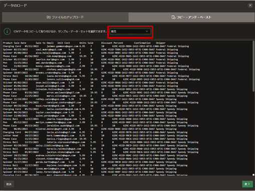
データのロード画面にて、任意の表名を入力し、「データのロード」ボタンをクリックします。
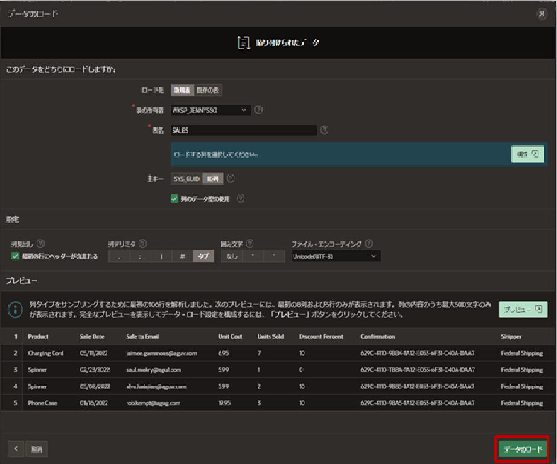
データがロードされ、表が作成されたら「アプリケーションの作成」ボタンをクリックします。
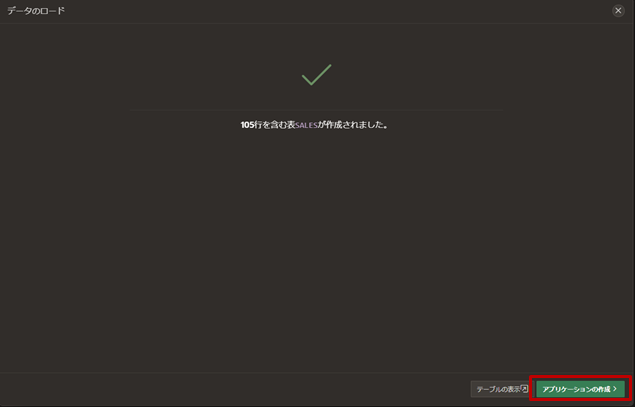
アプリケーションの作成画面にて、任意のアプリケーション名を入力します。 機能のセクションで「すべてをチャック」を選択し、「アプリケーションの作成」ボタンをクリックします。
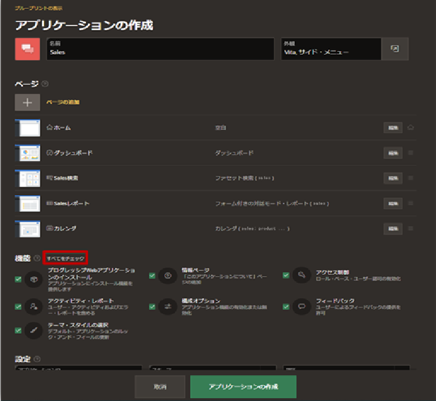
「アプリケーションの実行」を選択します。
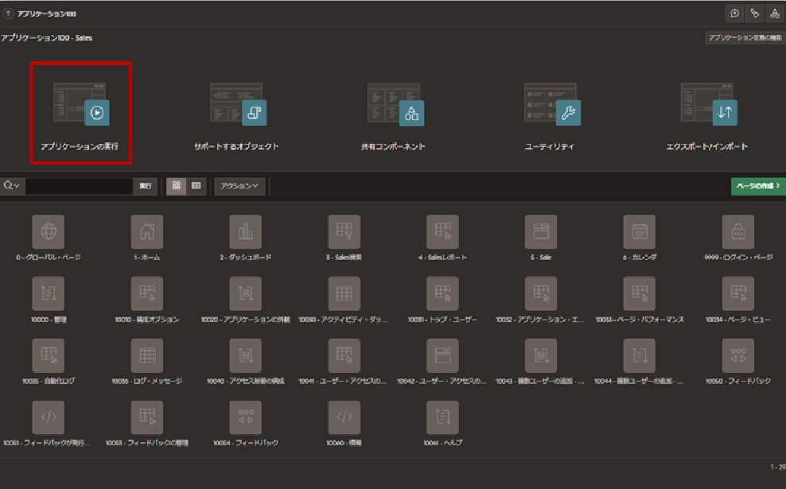
新しいタブが開き、アプリケーションのログイン画面が表示されます。 ワークスペースにログインしたユーザーのユーザー名とパスワードを入力し、アプリケーションにアクセスできることを確認します。
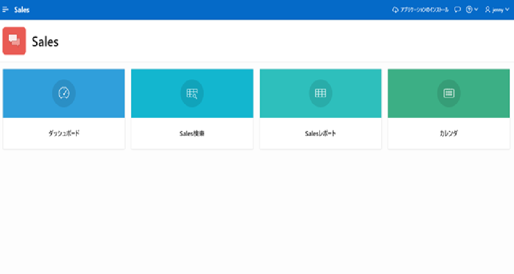
以上でサンプルのAPEXアプリケーションの作成は終了です。
2. 機密アプリケーションの登録
続いて、APEXアプリケーションをIdentity Domainに機密アプリケーションとして登録します。 Identity Domainに機密アプリケーションとして登録されたアプリケーションは、シングル・サインオンを構成したり、ユーザーのアクセス制御を実装することができます。
OCIコンソール画面左上のメニュー → アイデンティティとセキュリティ → アイデンティティ → ドメイン → シングル・サインオンを実装したいドメインを選択します。
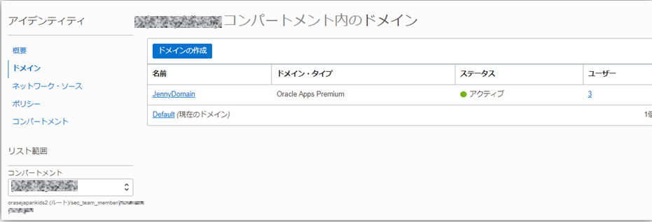
アイデンティティ・ドメインの詳細画面のドメイン情報から、「ドメインURL」をコピーし、ローカルPCのメモ帳などにメモします。
※後ほどの手順でドメインURLが必要になります。
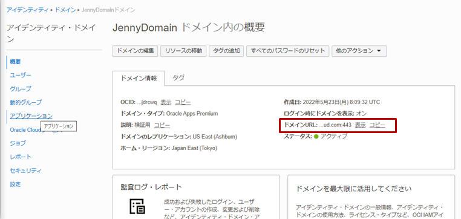
続いて、アイデンティティ・ドメイン詳細画面左下のメニューから「アプリケーション」のタブを選択し、「アプリケーションの追加」ボタンをクリックします。
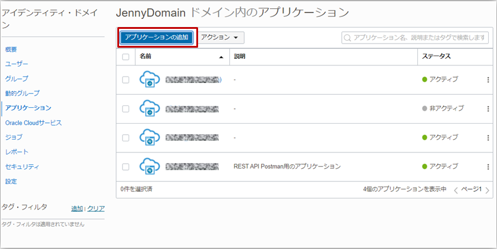
表示されたアプリケーションの追加画面で、「機密アプリケーション」を選択し、「ワークフローの起動」ボタンをクリックします。
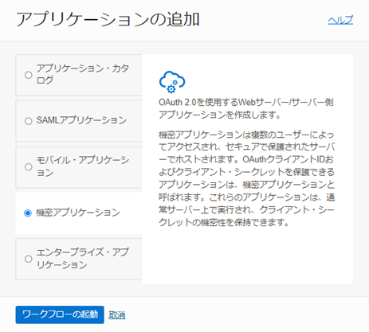
機密アプリケーションの追加画面にて、以下情報を入力します。
- 名前 - 任意 例）APEX
- アプリケーションURL - ＡPEXアプリケーションのURL（アプリケーション番号まで）例）https://g884b・・・1051.adb.ap-tokyo-1.oraclecloudapps.com/ords/f?p=100
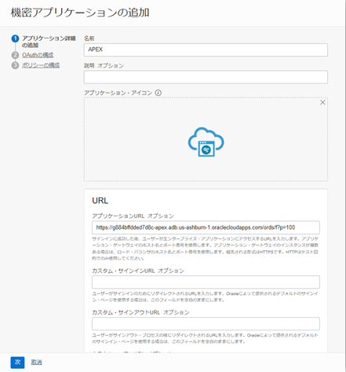
認証と認可のセクションにて、「権限付与と認可として実施」にチェックを入れ、「次」ボタンをクリックします。
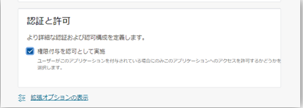
OAuthの構成画面のクライアント構成にて、「このアプリケーションをクライアントとして今すぐ構成します」にチェックを入れます。
許可される権限付与タイプにて「認可コード」を選択します。
その他、以下情報を入力し、「次」ボタンをクリックします。
- リダイレクトURL - 対象APEXアプリURLの「fp・・」を「apex_authentication.callback」に変更したURL 例）https://g884b・・・・1051.adb.ap-tokyo-1.oraclecloudapps.com/ords/apex_authentication.callback
- ログアウト後のリダイレクトURL - 対象APEXアプリのURL 例）https://g884b・・・・1051.adb.ap-tokyo-1.oraclecloudapps.com/ords/f?p=100
- ログアウトURL - <先程の手順でメモしたアイデンティティ・ドメインのURL>/oauth2/v1/userlogout 例）https://idcs-d0e4・・・・8d9.identity.oraclecloud.com:443/oauth2/v1/userlogout
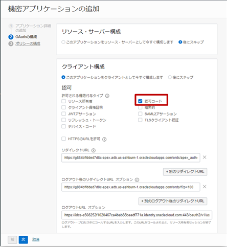
ポリシーの構成は「スキップして後で実行」を選択し、「終了」ボタンをクリックします。
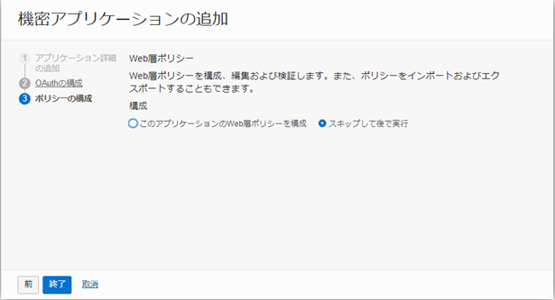
アプリケーションが作成されたら、アプリケーション詳細画面上部の「アクティブ化」をクリックし、アプリケーションをアクティブ化します。
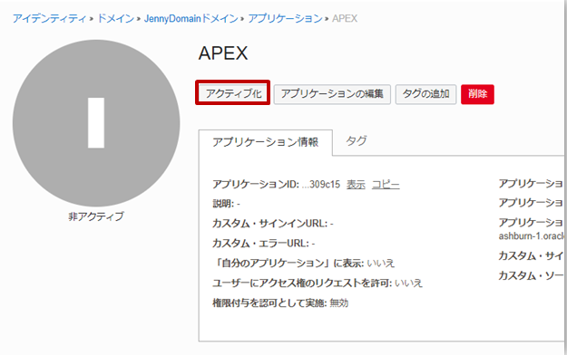
以上で機密アプリケーションの登録作業は終了です。
アプリケーション詳細画面左下のリソースメニューの「OAuth構成」のタブから、クライアントIDとクライアント・シークレットをコピーし、ローカルPCのメモ帳などにメモします。 ※後ほどの手順で使用します。
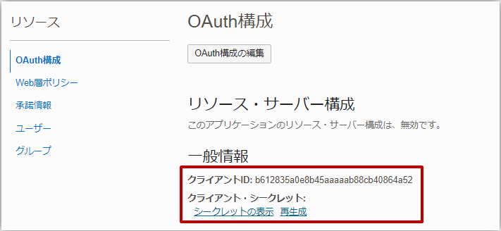
3. グループ作成
本手順では、APEXアプリケーションにアクセスできるIdentity Domainのグループ「APEX_ADMIN」と「APEX_USER」を作成します。
APEX_ADMINグループに属しているユーザーと、APEX_USERグループに属しているユーザーでそれぞれAPEXアプリケーション内でアクセスできるページが異なることを想定します。
3-1. APEX_ADMINグループの作成
アイデンティティ・ドメイン詳細画面左下のメニューから「グループ」を選択し、「グループの作成」ボタンをクリックします。
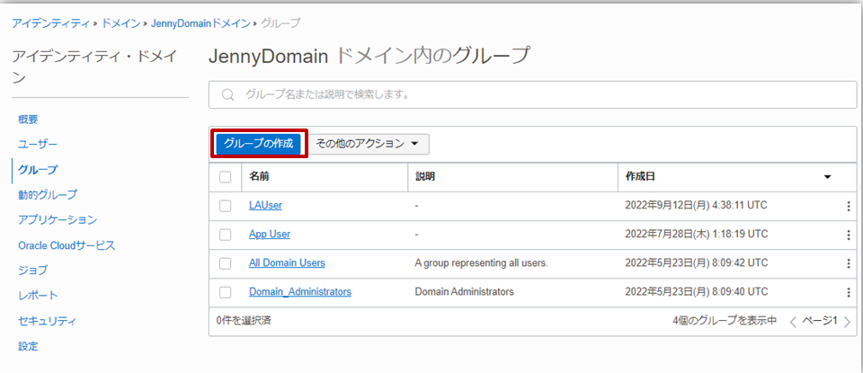
グループの作成画面にて、グループ名を入力し、グループに追加するユーザーを選択します。
- グループ名 - 例）APEX_ADMIN
「作成」ボタンをクリックします。
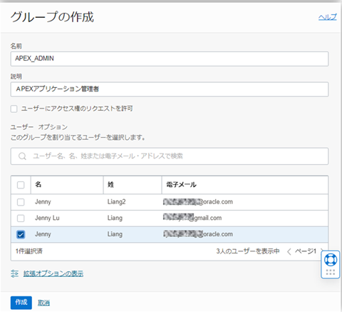
3-2. APEX_USERグループの作成
手順3-1と同様に、もう一つグループを作成します。 グループには、手順3-1で作成したグループに追加したユーザーとは異なるユーザーを追加します。
- グループ名 - 例）APEX_USER
「作成」ボタンをクリックします。
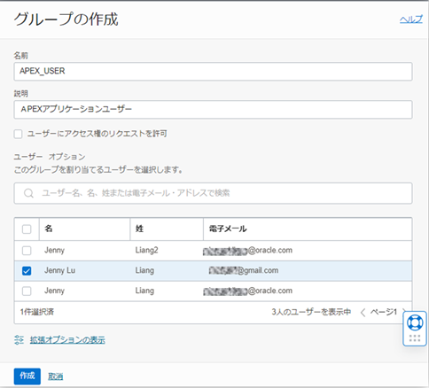
3-3. 機密アプリケーションへのグループの割当て
アイデンティティ・ドメイン詳細画面のメニューから「アプリケーション」のタブを開き、手順2で登録したAPEXの機密アプリケーションを選択します。
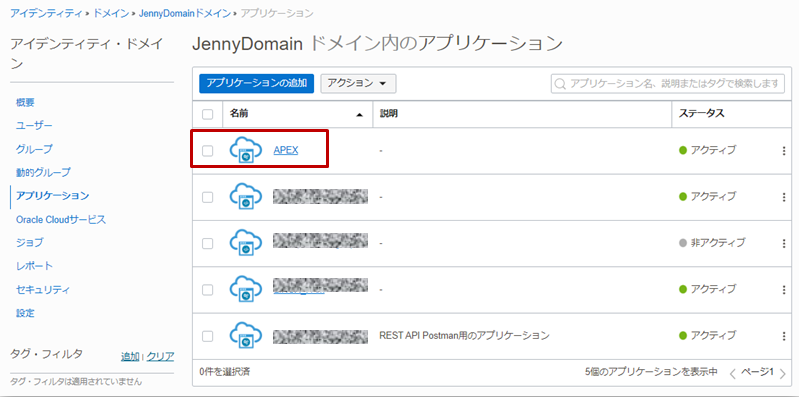
アプリケーション詳細画面左下のリソースメニューから「グループ」を選択し、「グループの割当て」ボタンをクリックします。
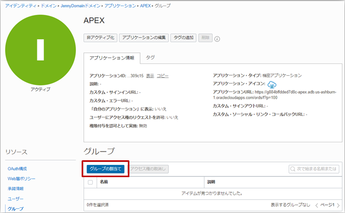
グループの割当て画面にて、手順3-1,3-2で作成したグループを選択し、「割当て」ボタンをクリックします。
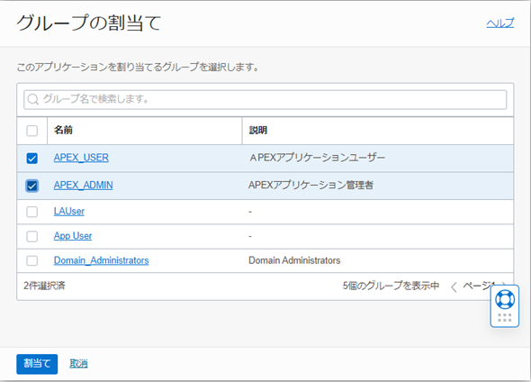
以上の手順で、Identity Domainに機密アプリケーションとして登録されたAPEXアプリケーションには、本手順で選択されたIdentity Domainのグループに属しているユーザーしかアクセスができなくなります。
4. Web資格証明の作成
APEXのワークスペースにアクセスし、「アプリケーション・ビルダー」を選択します。
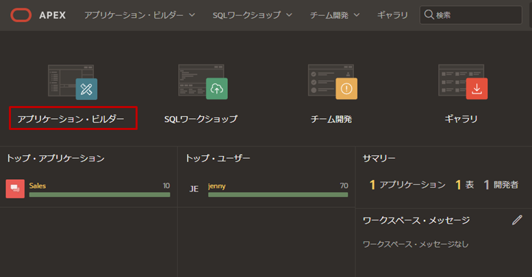
「ワークスペース・ユーティリティ」を選択します。
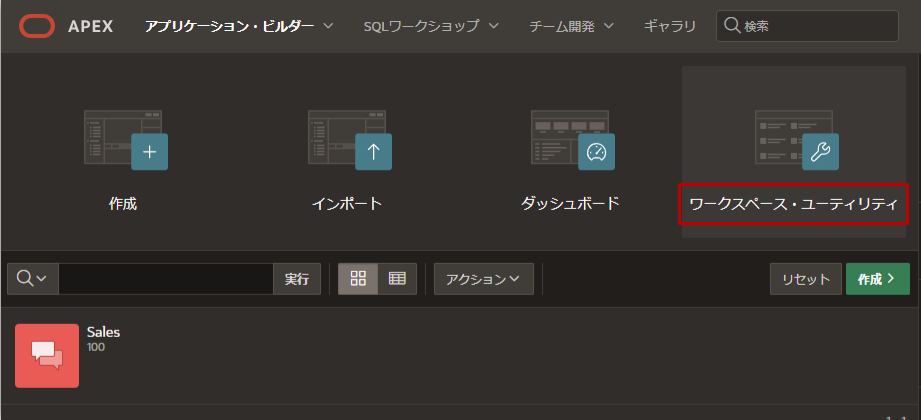
「Web資格証明」を選択します。
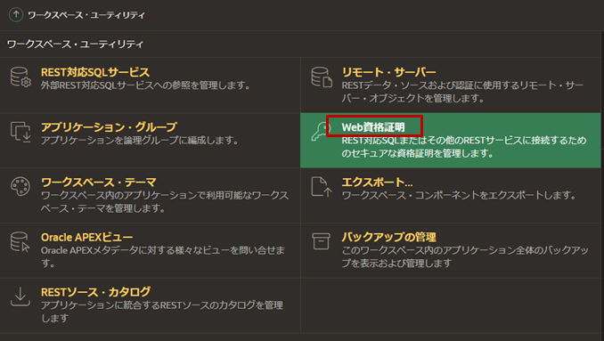
Web資格証明の画面にて、「作成」ボタンをクリックします。
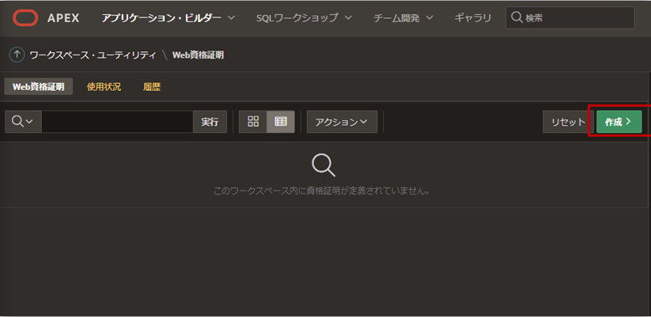
Web資格証明の作成画面にて以下情報を入力し、「作成」ボタンをクリックします。
- 名前 - 任意 例）Identity Domain Web Credentials
- 静的識別子 - 任意 例）同上
- 認証タイプ - 「基本認証」を選択
- クライアントIDまたはユーザー名 - 手順2の最後にメモしたクライアントIDを入力
- クライアント・シークレットまたはパスワード - 手順2の最後にメモしたクライアント・シークレットを入力
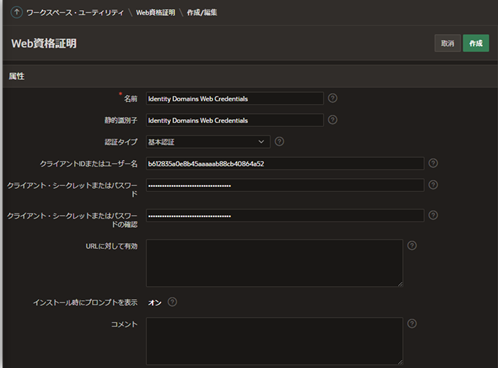
以上でWeb資格証明の作成は完了です。
5. 認証スキームの作成
APEXのワークスペースで、シングル・サインオンの構成をするアプリケーションを選択します。
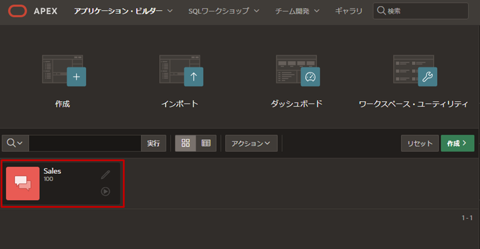
アプリケーションの「共有コンポーネント」を選択します。
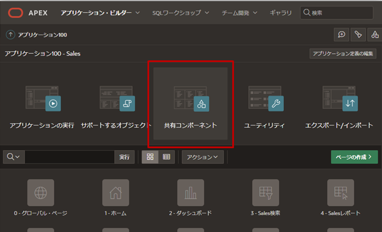
セキュリティのセクションから「認証スキーム」を選択します。
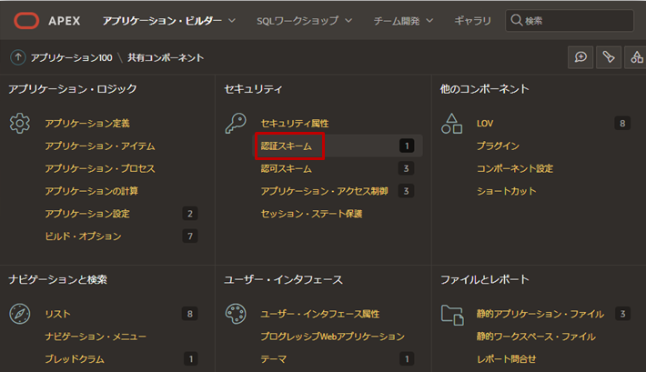
認証スキームの画面にて、「作成」ボタンをクリックします。
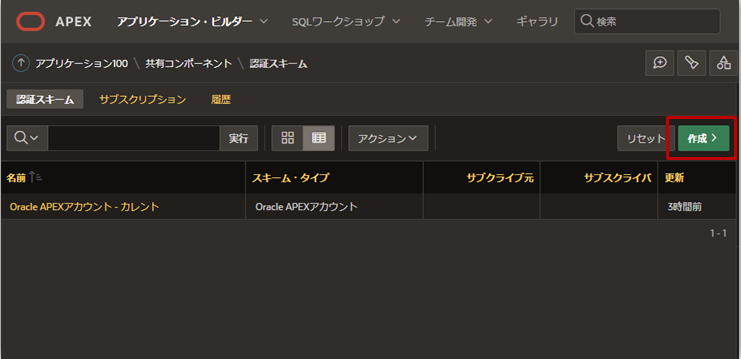
「ギャラリからの事前構成済スキームに基づく」が選択されていることを確認し、「次」ボタンをクリックします。
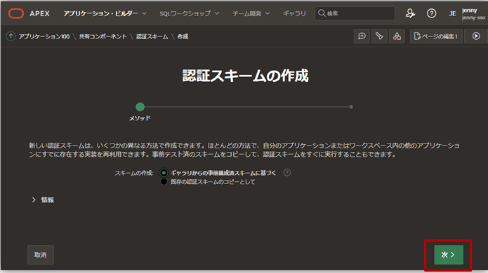
認証スキームの作成画面にて、以下情報を入力し、「認証スキームの作成」ボタンをクリックします。
- 名前 - 任意 例）Identity Domain Authentication Schema
- スキーム・タイプ - 「ソーシャル・サインイン」を選択
- 資格認証ストア - 手順4で作成したWeb資格証明を選択
- 認証プロバイダ - 「OpenID Connectプロバイダ」を選択
- 検出URL - <手順2でメモしたアイデンティティ・ドメインのURL>/.well-known/openid-configuration 例） https://idcs-d0e・・・・8d9.identity.oraclecloud.com:443/.well-known/openid-configuration
- 有効範囲 - 「profile,groups」を入力
- ユーザー名 - sub
- 追加ユーザー属性 - groups
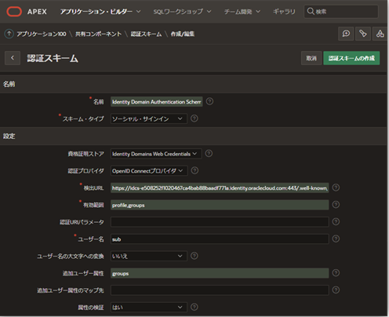
以上の手順で認証スキームが作成されます。 認証スキームが作成されたら、もう一度、作成した認証スキームをクリックします。
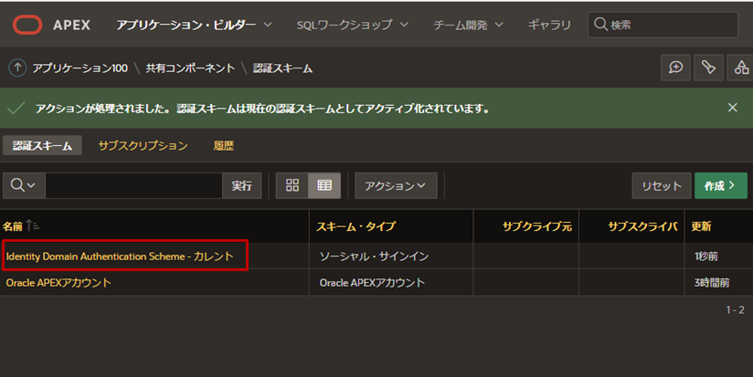
「ソース」のタブを開き、以下PL/SQL文を入力します。
procedure load_dynamic_groups as
l_group_names apex_t_varchar2;
Begin
--
-- add all group name to l_group_names
--
For I in 1..apex_json.get_count(‘groups’) loop
apex_string.push(
p_table=> l_group_names,
p_value => apex_json.get_varchar2(
p_path=> 'groups[%d].name’,
p0 => i));
end loop;
--
-- save group name in session
-- apex_authorization.enable_dynamic_groups(
p_group_names => l_group_names);
end;
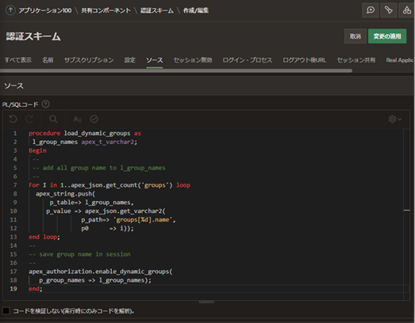
続いて、「ログイン・プロセス」のタブを開き、認証後のプロシージャ名に「load_dynamic_groups」と入力し、「変更の適用」ボタンをクリックします。
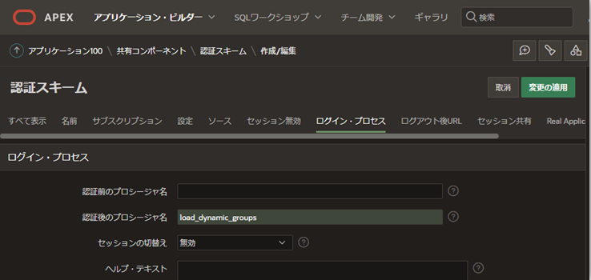
以上の手順で、Identity DomainのユーザーがAPEXアプリケーションにログインすると、同時にユーザーが属しているIdentity Domainのグループの情報が取得されます。
6. 認可の設定
6-1. セキュリティ属性の変更
APEXのワークスペースに戻り、アプリケーションの「共有コンポーネント」を選択します。
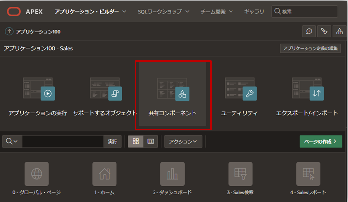
セキュリティのセクションから「セキュリティ属性」を選択します。
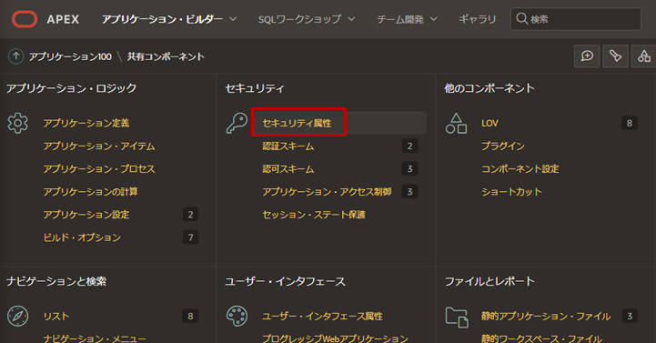
セキュリティのタブの「認可」のセクションで以下を選択し、「変更の適用」ボタンをクリックします。
- 認可スキーム - 「アプリケーション認可の必要なし」を選択
- ロールまたはグループ・スキームのソース - 「カスタム・コード」を選択
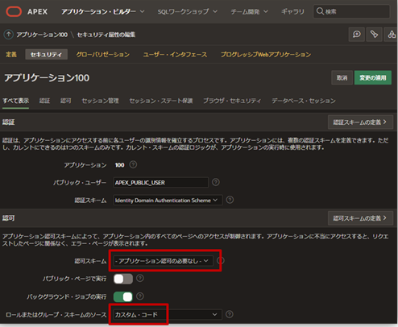
以上の手順でセキュリティ属性が変更されます。 画面右上のアプリケーション実行ボタンをクリックします。
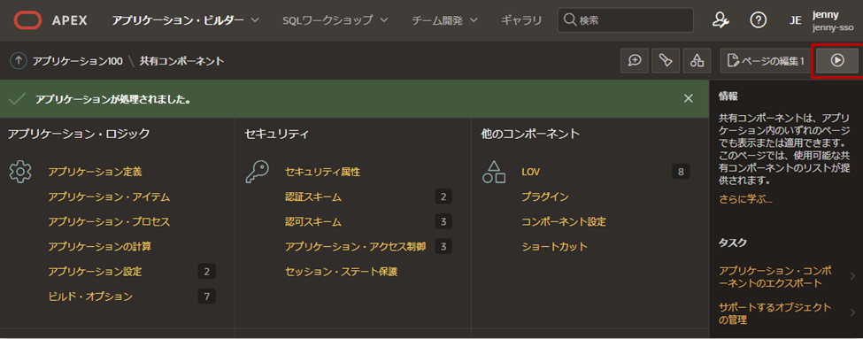
Identity Domainのログイン画面が表示されたら、Identity Domainのアクセス情報（ユーザー名/パスワード）を入力します。 初回ログイン時は、アクセス許可の確認画面が表示されるので、「許可」を選択します。
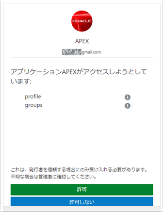
APEXアプリケーションに、APEX_ADMINグループに属しているIdentity Domainのユーザー名/パスワードを使用してログインできました。
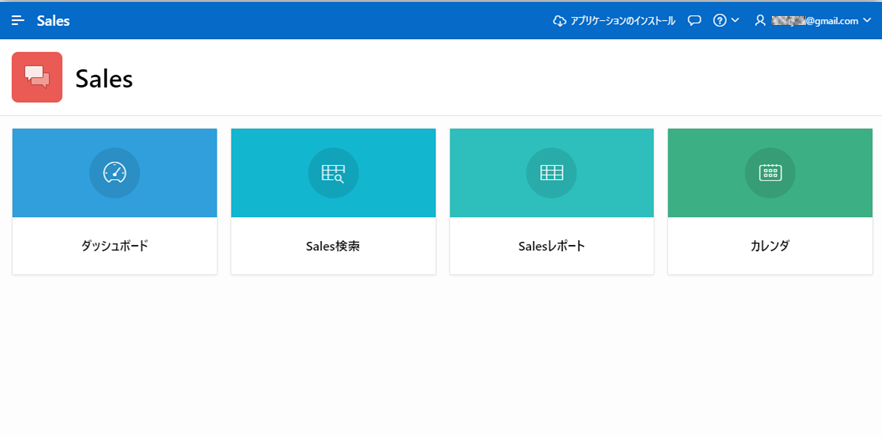
APEXワークスペースのトップメニューから「SQLワークショップ」→「SQLコマンド」を選択します。
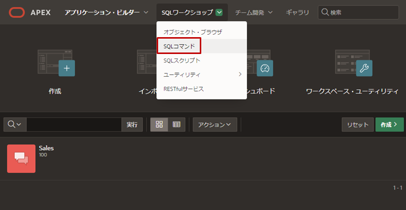
以下SQL文を実行し、APEXアプリケーションにログインしているユーザーの情報を取得します。
SELECT * FROM APEX_WORKSPACE_SESSION_GROUPS;
APEXにログインしたユーザーのIdentity Domain上のグループ情報が取得できていることを確認します。
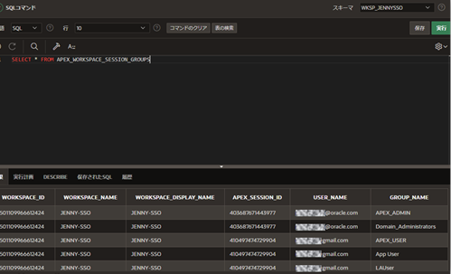
6-2. 認可スキームの作成
APEXアプリケーションの「共有コンポーネント」を選択します。
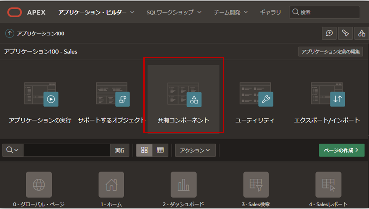
セキュリティのセクションから、「認可スキーム」を選択します。
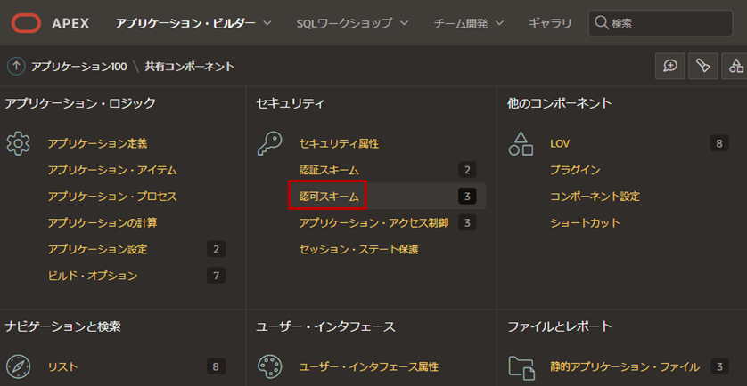
「作成」ボタンをクリックします。
「認可スキームの作成」画面にて、作成メソッドはデフォルトのまま「次」ボタンをクリックします。
詳細入力画面にて以下情報を入力し、「認可スキームの作成」ボタンをクリックします。
- 名前 - Identity Domainのグループ名を入力
- スキーム・タイプ - 「ロールまたはグループ内にある」を選択
- タイプ - 「カスタム」を選択
- 名前 - Identity Domainのグループ名を入力 例）APEX_USER
- スキームの違反時に表示されるエラー・メッセージの指定 - 任意のメッセージを指定 例）Not Authorized
6-3. ページの設定
アプリケーションの任意のページを選択します。
画面右に表示される検索ボックスにて「認可」と検索します。
表示された認可スキームで、手順6-2で作成した認可スキームを選択します。
以上の手順で、該当ページは認可スキームで設定したグループに所属しているユーザーしかアクセスが出来なくなります。
6-4. 動作確認
APEXアプリケーションに、APEX_USERグループに属していないIdentity Domainのユーザーでログインし、Sales検索のページを表示するとエラーになります。
一方で、APEX_USERグループに属しているIdentity Domainのユーザーは、APEXアプリケーションのSales検索ページを表示することができます。
また、ページのセキュリティ設定で、認証スキームを{非APEX_USER}にすることで、APEX_USERグループ以外のグループに属しているユーザーにアクセス権限を付与することも可能です。
以上で、Identity DomainによるAPEXアプリケーションへのシングル・サインオンおよび認可の設定は終了です。